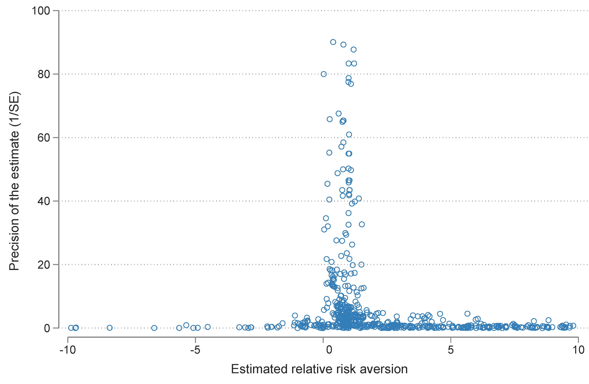

Abstract
Estimates of relative risk aversion vary widely, but no study has attempted to quantitatively trace the sources of the variation. We collect 1,021 estimates from 92 studies that use the consumption Euler equation to measure relative risk aversion and that disentangle it from intertemporal substitution. We show that calibrations of risk aversion are systematically larger than estimates thereof. Moreover, reported estimates are systematically larger than the underlying risk aversion because of publication bias. After correction for the bias, the literature suggests a mean risk aversion of 1 in economics and 2-7 in finance contexts. The reported estimates are driven by the characteristics of data (frequency, dimension, country, stockholding) and utility (functional form, treatment of durables). To obtain these results we use recently developed nonlinear techniques to correct for publication bias and Bayesian model averaging techniques to account for model uncertainty.
Fig: The funnel plot suggests publication bias in the literature
Reference: Elminejad A., Havranek T., and Z. Irsova (2025), "Relative Risk Aversion: A Meta-Analysis." Journal of Economic Surveys, 39(5): 2315-2333.